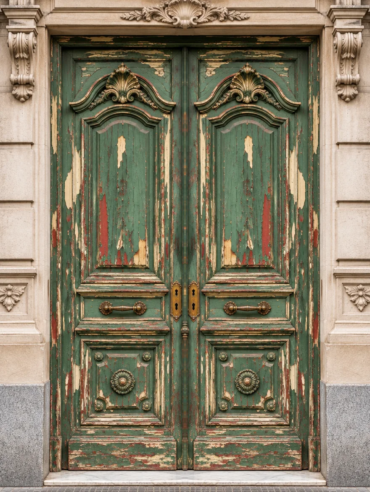

Puertas
Puertas de casa chorizo, portones y puertas de entrada con tallas. Se trabajan en el taller o en el lugar, sin desmontar.
≈ 1,6 m² por caraDecapado láser de madera en Olivos. Sin lija, sin removedor y sin perder un milímetro de la pieza.


Una puerta de cien años tiene cuatro, cinco, seis manos de pintura. Debajo está la madera que eligió el carpintero. El láser la devuelve tal cual: sin lijarla, sin mojarla, sin perder un milímetro.


Pasá el cursor por el portón: el láser sos vos. Cada pasada saca una capa, como en el taller.
Corte de una tabla con tres manos de pintura. Elegí un método y mirá qué le pasa a la madera.
| Lija | Removedor | Láser | |
|---|---|---|---|
| Madera que se pierde | Se come la superficie y redondea aristas | Poca, pero levanta la fibra | Ninguna: solo saca la pintura |
| Tallados y molduras | Difícil, a mano y lento | Queda pintura en los rincones | El haz entra en cada rincón |
| Residuos | Polvo fino de pintura vieja | Barro químico para descartar | Vapor que se aspira |
| Agua y químicos | No | Sí, y hay que neutralizar | No |
| Lista para terminar | Al terminar de lijar | Después de lavar y secar | El mismo día |
Con el cotizador tenés un precio orientativo en un minuto. Eduardo lo confirma con las fotos por WhatsApp.
Cada madera y cada pintura reaccionan distinto. Ajustamos potencia, frecuencia y patrón antes de tocar el resto.
Pulsos de nanosegundos vaporizan la pintura capa por capa. En el taller de Olivos o en tu casa, sin desarmar la abertura.
Te entregamos la madera limpia, lista para aceitar, lustrar o barnizar. Si querés, te recomendamos quién lo haga.
Cada pulso dura nanosegundos: vaporiza la pintura antes de que la madera llegue a calentarse.
Completá lo que sepas. El precio es orientativo: Eduardo lo confirma con fotos por WhatsApp.
Traé la pieza al taller o vamos nosotros: la máquina tiene ruedas, se enfría por aire y funciona con un enchufe común de 220 V.
No, si está bien regulado. Es un láser pulsado: dispara pulsos de nanosegundos que vaporizan la pintura sin darle tiempo a la madera de calentarse. Por eso siempre empezamos con una prueba en una zona oculta.
No hace falta desbastar. Para un barniz o lustre fino, alcanza con un repaso suave de lija fina antes de aplicar la terminación.
La pintura se vaporiza y genera humo. Trabajamos con aspiración y ventilación, y en domicilio aislamos la zona de trabajo.
Sí, el mínimo es de 4 horas de láser. Si tenés varias piezas chicas, las juntamos en la misma visita y entran en ese mínimo.
Depende de la cantidad de manos y del detalle. Una superficie lisa con pocas capas avanza rápido; tallados y pinturas gruesas llevan más tiempo. El cotizador te da una estimación en horas.
Sí, sobre todo con pintura o barniz viejo. Los plastificados de poliuretano cuestan más y conviene una prueba antes.